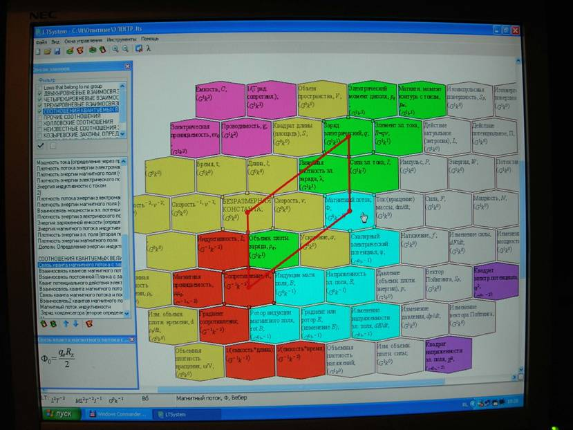
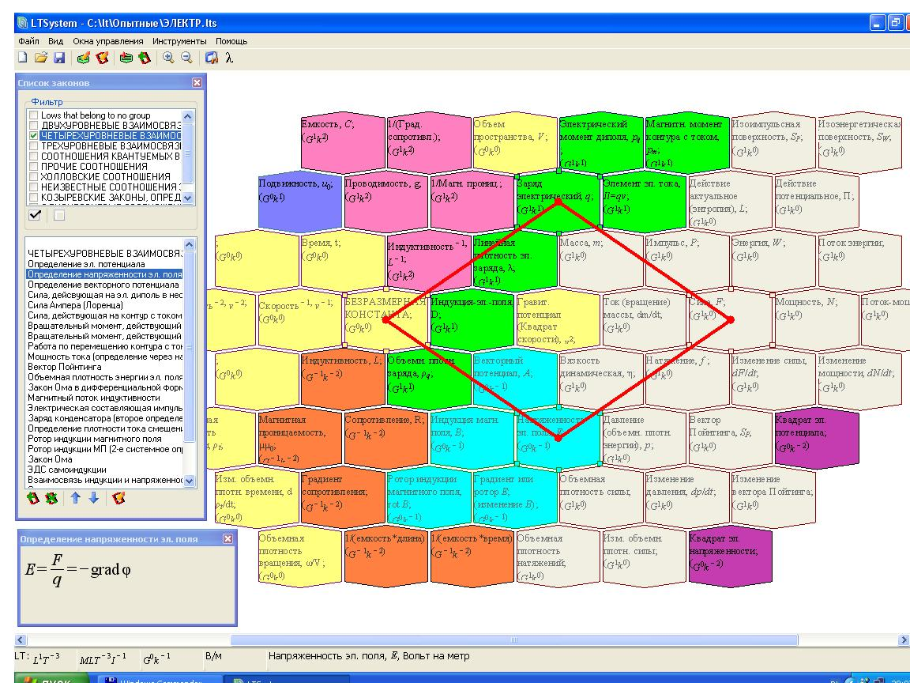
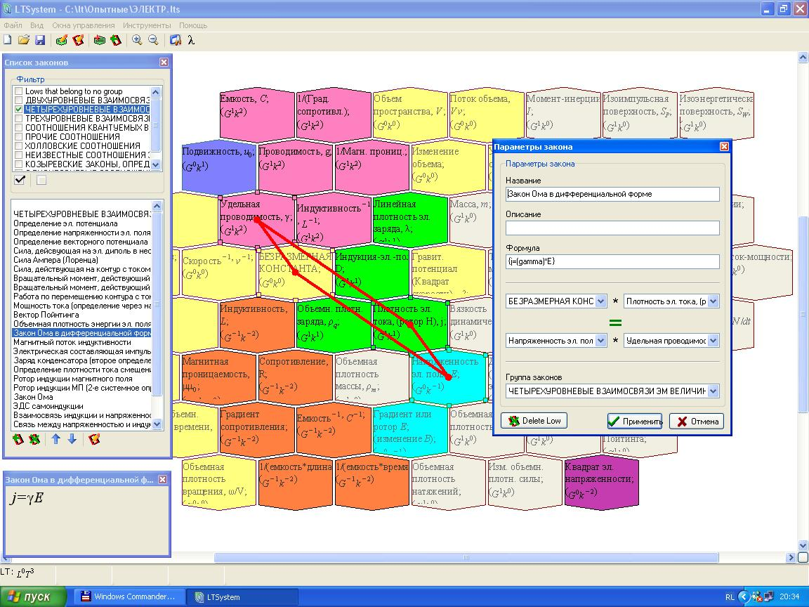

СИСТЕМА ФИЗИЧЕСКИХ ВЕЛИЧИН И
ЗАКОНОМЕРНЫХ СООТНОШЕНИЙ МЕЖДУ НИМИ
Автор
системы: А.С. Чуев
Введение
(В порядке информации - для интересующихся вообще)
Система представляет собой
многоуровневое образование из физических величин, связанных между собой
упорядоченными размерностными взаимосвязями. Кроме упорядоченного взаимного
расположения и определенной структуризации физических величин, в системе
обнаруживаются и наглядно представляются природные закономерности. Эти
закономерности выявляются по правилу выделенного параллелограмма (в общем случае)
- когда в соотношениях физических величин, расположенных на противоположных или
смежных вершинах выделенного параллелограмма происходит взаимное уничтожение
дополнительных размерностных коэффициентов. Система представлена в виде компьютерной
программы, которую можно свободно скачать с авторского сайта http://www.chuev.narod.ru/
.
Дополнительное общее пояснение
Известные физические величины
составляют упорядоченную определенным образом систему, в которой элементами
системы являются физические величины, и, которая, в отличие, например, от
системы химических элементов Д.И. Менделеева имеет многоуровневое строение,
поэтому ее невозможно представить в двумерном плоском изображении. Для ее
изображения используется специально разработанная компьютерная программа.
Примечательной особенностью системы является то, что она содержит не только
определенным образом упорядоченные физические величины, но и в ней наглядно
иллюстрируются природные физические закономерности, показываемые в виде
выделенных параллелограммов или выделенных линий, соединяющих три или четыре
элемента системы - физические величины, участвующие в математическом выражении
закономерности. Данная особенность определяется топологическими свойствами
системы и требует своего математического осмысления, особенно в случаях
многоуровневого расположения физических величин, участвующих в одной
закономерности.
Развернутое
пояснение.
Система физических
величин (ФВ) в электронном представлении (разработчик электронной программы:
А.С. Легейда) примечательна тем, что в ней осуществлены возможности
многослойного представления всей системы ФВ и показа по отдельности каждой закономерной
взаимосвязи между ними, причем, для известных закономерностей - с их математическим
представлением. Система на экране компьютера выглядит так (фото 1):
 Фото
1.
Более качественное
изображение системы, выполненное посредством кнопки «печать экрана» и через
редактор Paint, приведено на рис 1.

Рис.1. Система физических величин (блок
электромагнитных величин и закономерностей).
Ранее система
изображалась автором на нескольких бумажных рисунках, с показом только
нескольких системных закономерностей и, естественно, без их математического
представления.
Для визуального
различения ФВ разных системных уровней, ячейки с ФВ, принадлежащие разным
системным уровням, окрашиваются в разные цвета. Наряду с выделением цветом
ячейки с ФВ содержат информацию о дополнительных размерностных коэффициентах.
Все это служит хорошим ориентиром для выделения и обнаружения в системе ее
структуры (системных блоков) и закономерных размерностных взаимосвязей,
существующих между ФВ.
В качестве основных компонентов
в системе ФВ объективно (исходя из
размерностных соотношений двух размерностных систем) обнаруживаются и
выделяются два уровня общих базовых величин (кинематические и динамические ФВ)
и три уровня электромагнитных величин (базовые электромагнитные, полевые и
структуро-средовые ФВ).
Компьютер программно
позволяет легко обнаруживать и визуализировать
размерностные закономерные взаимосвязи, существующие между ФВ, в том
числе, и межуровневые, если они правильно определены пользователем.
Основные возможности
системы ФВ в электронном исполнении следующие. Имеются два режима ее
использования. Первый режим –
иллюстративный, который в различных вариантах можно использовать как учебный.
Возможности этого режима следующие:
- на экран компьютера
вместе с системой ФВ, имеющей возможность масштабного регулирования, вызывается список закономерностей, ранее
введенных в программную базу знаний;
- производя поочередное
выделение в указанном списке названия любой закономерности, можно визуально
наблюдать на изображении системы ФВ выделенный параллелограмм или выделенную
линию, соответствующую данной закономерности. При этом, в системных элементах автоматически появляются
ячейки с нужными ФВ, если они отсутствовали в элементах на момент выделения
названия закономерности;
- на экране компьютера в
дополнительном окне показывается математическая формула, соответствующая
выделенной из списка закономерности;
- в экранном окне со
списком физических закономерностей имеется клавиша вызова еще одного
всплывающего окна с более полной информацией о выделенной закономерности. Пример
такого окна в блоке электромагнитных величин приведен на рис.2.

Рис.2. Система физических величин с
окном редактирования закономерности.
В учебных целях можно
использоваться как все, так и ограниченную часть указанных возможностей.
Второй
режим использования системы ФВ в электронном исполнении - поисковый или исследовательский:
- в системе отыскиваются
три или четыре ячейки с ФВ, которые соответствуют правилу «выделенного параллелограмма» или
«выделенной линии»: когда при перемножении и сравнении содержимого выделенных
ячеек с ФВ, расположенных на противоположных вершинах выделяемого (вначале лишь
мысленно) параллелограмма, имеет место взаимное уничтожение дополнительных
размерностных коэффициентов, присутствующих в ячейках с ФВ. (То же имеет место при делении и сравнении
содержимого ячеек, расположенных на смежных вершинах выделенного
параллелограмма);
- в случае правильного
(по указанному правилу) выделения трех или четырех ячеек с ФВ, на экранном
изображении системы появляется визуальное системное отображение найденной законности в виде параллелограмма
или линии с точками, расположенными по центру системных ячеек с выделенными
ФВ. Одновременно на экране компьютера
появляется всплывающее информационное окно;
- если обнаруженная
закономерность имеется в базе знаний, то указанное всплывающее окно содержит
всю полную информацию об этой закономерности. В этом случае появление
информационного всплывающего окна служит (наряду с появляющимся параллелограммом
или линией) дополнительным сигналом о правильности системного поиска и
выделения какой-либо физической закономерности. Остается лишь прочесть
наименование этой закономерности и дополнительную информацию о ней;
- если в базе знаний нет
информации об обнаруженной закономерности, то всплывающее окно содержит пустые
разделы, в которые можно внести всю необходимую информацию об этой
закономерности и затем, при желании, внести ее в базу знаний. Разделы
предусматривают: название закономерности, возможное ее дополнительное описание,
формульное выражение и название группы физических закономерностей к которой она
(найденная) относится.
Второй режим
использования системы ФВ можно применять и в учебных целях, используя поисковый
режим по имеющимся в базе знаний
закономерностям или искусственно удаляя их из базы знаний. Для этого в
программе предусмотрено сохранение нескольких пользовательских вариантов
системы ФВ. Кроме того, для удобства пользования, вся база знаний обычно разбивается
на три-четыре блока содержащие ФВ и закономерности отдельных областей:
механики, теплоты и излучений, электромагнетизма и квантовой механики.
В электронном варианте
представления системы в низу экрана имеется информационная строка, содержащая
информацию об элементе системы и ФВ, на которой оказывается курсор мышки. В
дополнение к названию и буквенному обозначению ФВ, которые имеются на изображении ячейки с ФВ, здесь отражаются:
обозначение системного элемента в LT- координатах, размерность ФВ в системе
СИ, значение дополнительного размерностного коэффициента при ФВ и ее
наименование, а также единица измерения ФВ в СИ по наименованию и условному обозначению.
Для облегчения
пользования системой ФВ в режиме поиска неизвестных (пользователю или вообще)
физических закономерностей, ячейки с ФВ, имеющие одинаковый набор
дополнительных размерностных коэффициентов,
имеют одинаковую цветовую окраску. Назначение своего особого цвета для
ячеек с ФВ, принадлежащих к определенному системному уровню, хорошо иллюстрирует
объективное (системно-топологическое) разделение элементов системы на группы
(по их функциональному признаку) и помогает в поиске новых природных закономерностей.
Электронный вариант
системы ФВ с визуализацией их основных характеристик, групп и закономерных взаимосвязей между ФВ и, при желании, с
формульным представлением этих взаимосвязей, имеет потенциал хорошего учебного
пособия. Система ФВ обладает: наглядностью в представлении изучаемого
материала, целостностью это представления для большой совокупности ФВ, возможностью творческого участия обучаемых в
поиске как известных, так и новых
природных закономерностей.
Рисунки, дополнительно
иллюстрирующие текст настоящего пояснения, размещены на сайте http://foto.mail.ru/bk/tchuev/1/ .
КРАТКОЕ ОПИСАНИЕ СИСТЕМЫ
ФИЗИЧЕСКИХ
ВЕЛИЧИН В ЭЛЕКТРОННОМ ИСПОЛНЕНИИ
(для пользователей)
Система физических
величин (ФВ) имеет вид упорядоченно расположенных системных элементов,
выраженных в LT– размерностном (через
длину и время) представлении. Каждый
системный элемент включает в себя от одной до нескольких ФВ, выраженных по размерности в системе СИ и обычно имеющих
дополнительные размерностные коэффициенты, которыми ФВ по размерности отличается от размерности
системного элемента. ФВ с одинаковым набором дополнительных размерностных коэффициентов
составляют отдельные системные уровни. ФВ разных системных уровней -
помечены разными цветами.
С обычным (не
электронным, а бумажным) представлением системы ФВ и более подробным ее
рассмотрением - можно познакомиться в ранее опубликованных работах Чуева
А.С. Их список имеется на сайте www.chuev.narod.ru
. Более детальное рассмотрение системы ФВ приводится также в пяти частях (одна
вводная и четыре отдельные части, посвященные различным разделам физики)
текстового учебного пособия,
прилагаемого к программе.
Запуск программы с
электронным представлением системы ФВ осуществляется пусковым файлом LTSystem.exe или вызовом рабочего файла программы
с расширением .lts из рабочей директории «Dokumentu» или «документы». Возможно создание пользователями своих директорий и
файлов. После вызова рабочего файла, колесиком мышки (или клавишами «+» и «-»)
и экранными ползунками «вверх-вниз», «вправо-влево» устанавливаются наиболее
подходящие масштаб и расположение системы ФВ на мониторе компьютера.
Основные возможности и
преимущества системы ФВ в электронном исполнении следующие. Имеются два режима
ее использования. Первый режим – иллюстративный, который в различных
вариантах можно использовать как учебный. Возможности этого режима
следующие:
- на экран компьютера
вместе с системой ФВ, вызывается полный (или по групповой) список
закономерностей, ранее введенных в программную базу знаний (команды экранного
меню: Вид, Список законов);
- производя поочередное
выделение в указанном списке названия любой закономерности (из любой отмеченной
группы законов), можно визуально наблюдать на изображении системы ФВ выделенный
параллелограмм или выделенную линию, иллюстрирующую отмеченную закономерность.
При этом, в системных элементах
автоматически появляются ячейки с нужными ФВ, если они отсутствовали в
элементах на момент выделения названия закономерности;
- при желании, на экран
компьютера можно вызвать дополнительное окно, в котором будут показываться
математические формулы, соответствующие той или иной выделенной закономерности
(команды экранного меню: Вид, Показ формул). Величина шрифта формул
регулируется командой экранного меню: Вид, Customise…, нижнее Low line size.
- в экранном окне со
списком физических закономерностей имеется клавиша вызова еще одного
всплывающего окна с более полной информацией о выделенной закономерности и
возможностью ее редактирования (правая нижняя клавиша из меню Список законов).
В учебных целях можно
использовать как все, так и ограниченную часть указанных возможностей.
Второй режим использования системы ФВ в
электронном исполнении - поисковый или
исследовательский:
- в системе отыскиваются
и выделяются три или четыре ячейки с ФВ, которые соответствуют правилу «выделенного параллелограмма» или
«выделенной линии», когда при перемножении и сравнении содержимого выделенных
ячеек с ФВ, расположенных на противоположных вершинах выделяемого (вначале лишь
мысленно) параллелограмма, имеет место взаимное уничтожение дополнительных
размерностных коэффициентов, присутствующих в ячейках с ФВ. (Отметим, что можно также делить и сравнивать
содержимое ячеек, расположенных на смежных вершинах выделенного
параллелограмма). Выделение ячейки с ФВ производится простым одинарным щелчком
левой клавиши мышки при расположении курсора мышки примерно на середине (и
чуть ниже середины) ячейки с ФВ;
- в случае правильного
(по указанному правилу) выделения трех или четырех ячеек с ФВ, на экранном
изображении системы появляется визуальное системное отображение найденной закономерности в виде
параллелограмма или линии с точками, расположенными по центру системных ячеек с
выделенными ФВ. (Толщина выделенной линии
регулируется с помощью команды экранного меню: Вид, Customise…, верхнее Low line size). Одновременно на экране компьютера
появляется всплывающее информационное окно;
- если обнаруженная
закономерность имеется в базе знаний, то указанное всплывающее окно содержит
всю полную информацию об этой закономерности. В этом случае появление
информационного всплывающего окна служит (наряду с появляющимся параллелограммом
или линией) дополнительным сигналом о правильности системного поиска и
выделения какой-либо физической закономерности. Остается лишь прочесть
наименование этой закономерности и дополнительную информацию о ней;
- если в базе знаний нет
информации об обнаруженной закономерности, то всплывающее окно содержит пустые
разделы, в которые можно внести всю необходимую информацию об этой закономерности.
Разделы предусматривают: название закономерности, возможное дополнительное ее
описание, формульное выражение и название группы физических закономерностей к
которой она (найденная) относится. Найденную закономерность можно внести (или
не вносить) в имеющуюся в программе базу знаний.
Второй режим
использования системы ФВ можно применять и в учебных целях, используя поисковый
режим по имеющимся в базе знаний
закономерностям или искусственно удаляя их из базы знаний. Для этого в
программе предусмотрено сохранение нескольких пользовательских вариантов
системы ФВ. Кроме того, для удобства пользования, вся база знаний обычно
разбивается на три-четыре блока преимущественно содержащих ФВ и закономерности
отдельных физических областей: механики, теплоты и излучений, электромагнетизма
и квантовой механики.
В электронном варианте
представления системы ячейки с ФВ содержат, как правило, только наименование и
буквенное обозначение ФВ. Размерность системного элемента, содержащего ячейку с
ФВ, и значение дополнительного размерностного коэффициента при ФВ, приводятся в
специальной экранной информационной строке (внизу экрана). В этой же
информационной строке дополнительно приводятся размерность ФВ в СИ и ее единица
измерения в СИ. Для облегчения
пользования системой ФВ в режиме поиска неизвестных или новых физических
закономерностей, ячейки с ФВ, имеющие одинаковый набор дополнительных
размерностных коэффициентов, имеют
одинаковую цветовую окраску. С этой же целью ячейки с ФВ содержат и дополнительные
размерностные коэффициенты. Цвет ячеек с ФВ и значения дополнительных
размерностных коэффициентов в них, устанавливаются в специальном окне,
вызываемом командой экранного меню: Окна управления, Параметры группы
величин.
Выбор ячеек с ФВ, находящихся в одном и том же
элементе системы, производится вызовом дополнительного экранного меню путем
нажатия правой клавиши мышки при нахождении ее курсора на данном
элементе системы. При этом возможно редактирование имеющихся ячеек с ФВ и
создание новых ФВ в этом элементе системы. Величина шрифта в ячейках с ФВ и
другие параметры ячеек регулируются командой экранного меню: Вид, Customise….
На панели управления
экранного меню компьютера под общей командой Окна управления имеются
дополнительные управляющие кнопки (клавиши), позволяющие вводить новые
системные элементы и новые ячейки с ФВ, как имеющихся, так и новых системных
уровней. Имеются кнопки вызова управляющих окон для отдельных системных групп
ФВ и отдельных групп закономерностей. Группы закономерностей, в отличие от групп
ФВ, формируются пользователем, поэтому их состав достаточно произволен и может
меняться.
Электронный вариант
системы ФВ с визуализацией их закономерных
взаимосвязей и, при необходимости, с формульным представлением этих
взаимосвязей, имеет потенциал хорошего учебного пособия, обладающего:
наглядностью в представлении изучаемого материала, целостностью это представления
для большой совокупности ФВ,
возможностью творческого участия обучаемых в поиске как известных, так и новых природных закономерностей.
Имеющаяся база знаний
компьютерной программы содержит порядка 100 ФВ и около 300 известных и
предполагаемых закономерностей. Среди предполагаемых закономерностей имеются
козыревские, которые основаны на системных взаимосвязях новой ФВ - объемная
плотность времени, впервые предположенной Н.А. Козыревым.
В программе предусмотрено
использование иностранных: английского и немецкого языков, использование
которых в управляющих окнах включается основным экранным меню (одна из верхних
правых клавиш экранного меню).
Рисунки, дополнительно иллюстрирующие
текст данного описания, размещены на сайте http://foto.mail.ru/bk/tchuev/1/ и в файле (здесь).
ПРИМЕЧАНИЕ:
Авторский вариант данного
продукта не имеет ограничений по его распространению и личному пользованию
(Имя: Authors: Chuev, Legeyda ; Пароль: 685C55FF) . Однако при коммерческом
использовании продукта (в системе платного образования и др.), принадлежащего
авторам на праве интеллектуальной собственности, следует обратиться к авторам
за приобретением права пользования и получением своих персональных: логина и
пароля.
С предложениями и
замечаниями по системе ФВ и работе программы обращаться по адресам электронной
почты авторов системы и компьютерной программы с ее электронным
представлением:
А.С.Чуев
(система и информационное наполнение,
chuev@mail.ru ),
А.С.
Легейда (компьютерная программа, alex-legeyda@yandex.ru)